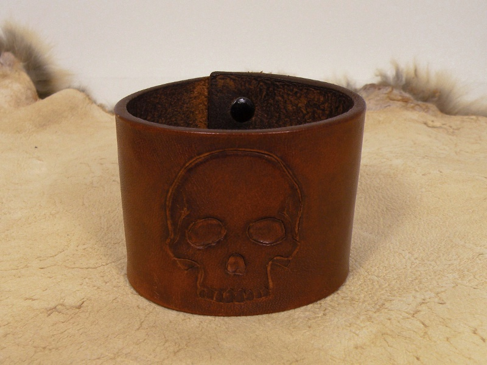

Leather Wristbands Leather Wristbands
Leather Wristbands Leather WristbandsWhile leather supply companies offer countless stamps and embossing tools, I have never been one to do things the easy way, nor one to settle for anything but originality. I used a razor blade and some homemade tools to impress the skull into this leather bracelet.
I stained the leather with my own recipe of ferric oxide (rust) and acetone. Whenever wire-brushing the loose rust from an especially corroded piece of iron, I collect the rust and save it for use as a pigment and stain. Acetone makes an effective quick-drying carrier for the pigment. On leather, the mixture imparts a reddish-brown color which has neither faded, nor changed color in the several years I have worn the bracelet.

Some years ago I decided to attend a Halloween party as the Transformer-era Lou Reed. Having very little time to locate such punk accoutrements as studded bracelets and collar, I made them from scrap leather and studded them with bolts by carefully peening the bolts over on the inside.
Created by Sean Corron, April 2, 2011.